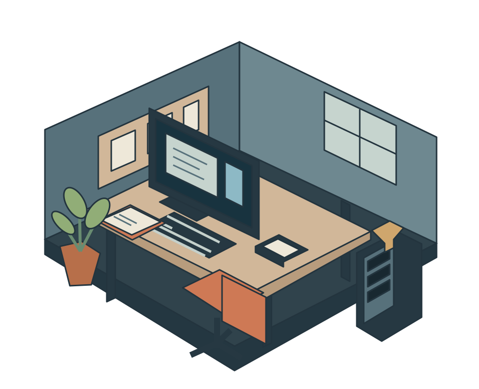

tw./
Preparing the workspace
TATE WILSON // DIGITAL FORENSICS
Enter the lab.
Projects, evidence work, infrastructure, and experience live inside this room.
Drag to orbit · wheel to move closer · select an object
MOBILE WORKSPACE
Tate Wilson
Digital Forensics & Cybersecurity at Eastern Kentucky University.